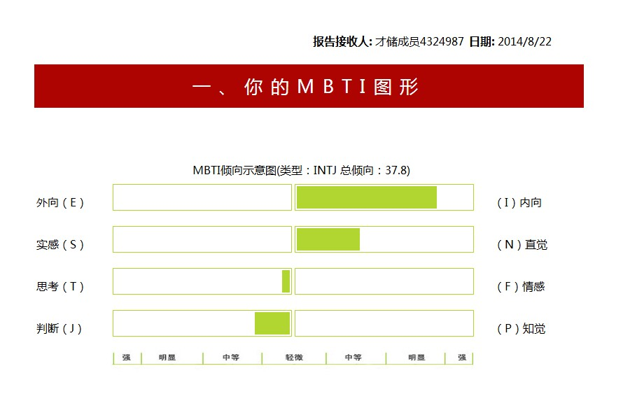
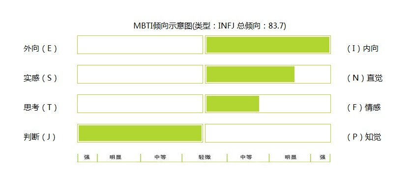

Conversation with 81184027 at Fri 22 Aug 2014 11:24:42 AM CST on 154115835 (webqq)
(08/22/2014 10:46:17 AM) 2825831556: 嗯(⊙_⊙)
(08/22/2014 10:46:25 AM) 醒悟: :D没价值有不能改变啥
(11:24:43 AM) lost message from #203956 to #203956
(08/22/2014 10:55:23 AM) 2825831556: 又不准了:L
(08/22/2014 10:56:10 AM) 辽宁-沈阳&樱桃: 有时候自己都未必完全了解自己呢,什么准不准的哈
(08/22/2014 10:56:25 AM) 醒悟: 游乐活动何必当真
(08/22/2014 10:57:09 AM) 2825831556: 认真看了，还是具有参考性
(08/22/2014 10:58:20 AM) 辽宁-沈阳&樱桃: 世代额
(08/22/2014 10:58:23 AM) 辽宁-沈阳&樱桃: 是的
(08/22/2014 10:59:18 AM) 田慧慧-金华: @ Loki ，老公从前的同事团队去了杭州，新游戏项目发财了，核心成员年收入均达百万或几十万。他是设计师从前也核心的。可是我要他放弃回来金华了，孩子刚满月他去了杭州我确实吃不消独自撑着。也许他该找的是更健康能干的。我从来体育不及格体重全班最轻，拖他后腿了。
(08/22/2014 11:01:20 AM) 田慧慧-金华: 不过，男人难道奢望找个全能的老婆，家务孩子工作挣钱美貌一样不落下，怎么可能啊。过得难受，回娘家专心带宝贝女儿去，只有她最贴心永远不会辜负我。
(11:24:43 AM) lost message from #203965 to #203965
(08/22/2014 11:03:16 AM) 2825831556: 28道题才能耐心做完
(08/22/2014 11:03:27 AM) 2825831556: 93的太多了哇
(08/22/2014 11:03:44 AM) 2825831556: 百分百内向
(08/22/2014 11:04:15 AM) 辽宁-沈阳&樱桃: 什么时候咱们一起做做93题
(11:04:45 AM) 2825831556: I和J都满格啦
(11:04:56 AM) 2825831556: 好哇好哇
(11:05:26 AM) 辽宁-沈阳&樱桃: :胜利:
(11:05:37 AM) 2825831556: ;-)
(08/22/2014 10:46:17 AM) 此去经年: 嗯(⊙_⊙)
(08/22/2014 10:46:25 AM) 醒悟: :D没价值有不能改变啥
(11:24:43 AM) 此去经年: lost message from #203956 to #203956
(08/22/2014 10:55:23 AM) 此去经年: 又不准了:L
(08/22/2014 10:56:10 AM) 辽宁-沈阳&樱桃: 有时候自己都未必完全了解自己呢,什么准不准的哈
(08/22/2014 10:56:25 AM) 醒悟: 游乐活动何必当真
(08/22/2014 10:57:09 AM) 此去经年: 认真看了，还是具有参考性
(08/22/2014 10:58:20 AM) 辽宁-沈阳&樱桃: 世代额
(08/22/2014 10:58:23 AM) 辽宁-沈阳&樱桃: 是的
(08/22/2014 10:59:18 AM) 田慧慧-金华: @ Loki ，老公从前的同事团队去了杭州，新游戏项目发财了，核心成员年收入均达百万或几十万。他是设计师从前也核心的。可是我要他放弃回来金华了，孩子刚满月他去了杭州我确实吃不消独自撑着。也许他该找的是更健康能干的。我从来体育不及格体重全班最轻，拖他后腿了。
(08/22/2014 11:01:20 AM) 田慧慧-金华: 不过，男人难道奢望找个全能的老婆，家务孩子工作挣钱美貌一样不落下，怎么可能啊。过得难受，回娘家专心带宝贝女儿去，只有她最贴心永远不会辜负我。
(11:24:43 AM) 此去经年: lost message from #203965 to #203965
(08/22/2014 11:03:16 AM) 此去经年: 28道题才能耐心做完
(08/22/2014 11:03:27 AM) 此去经年: 93的太多了哇
(08/22/2014 11:03:44 AM) 此去经年: 百分百内向
(08/22/2014 11:04:15 AM) 辽宁-沈阳&樱桃: 什么时候咱们一起做做93题
(11:04:45 AM) 此去经年: I和J都满格啦
(11:04:56 AM) 此去经年: 好哇好哇
(11:05:26 AM) 辽宁-沈阳&樱桃: :胜利:
(11:05:37 AM) 此去经年: ;-)
(08/22/2014 10:54:57 AM) 此去经年: (#203956)
(08/22/2014 11:02:55 AM) 此去经年: (#203965)
(01:11:11 PM) 光: 现在有人对你们说：“牺牲你们个人的自由，去求国家的自由！”我对你们说：“争取个人的自由，就是争取国家的自由；争取个人的人格，就是争取国家的国格！自由平等的国家不是一群奴才建造得起来的！”————胡适
(01:11:57 PM) 光: 100年前能有这样的见识，难得
(01:16:41 PM) 潮哥: 真不愧大师
(01:13:47 PM) 光: 嗯
(01:18:38 PM) 潮哥: 幸亏去了台湾，不然会死的比他徒弟吴晗还惨
(01:18:40 PM) 福建-福州&水浒: :强:
(01:18:55 PM) 福建-福州&水浒: 我最喜欢胡适先生的这句话
(01:19:11 PM) 福建-福州&水浒: 先见之明
(01:16:09 PM) 光: 美国人来了，有面包，有自由；苏联人来了，有面包，无自由；他们来了，无面包，无自由。
(01:16:38 PM) 光: ————胡适
(01:19:56 PM) 潮哥: 说的太对了
(01:16:47 PM) 光: 于是胡适跟着老蒋去了台湾
(01:19:59 PM) 福建-福州&水浒: 骂了国民党才更希望他能治理好这个民族，
(01:20:09 PM) 福建-福州&水浒: 胡适却不骂共产党
(01:20:31 PM) 山东-青岛&昆吾: 骂国民党有面包
(01:20:34 PM) 福建-福州&水浒: 共产党在他眼里就是不入流之辈
(01:20:41 PM) 山东-青岛&昆吾: 骂共产党有负重轮
(01:20:56 PM) 福建-福州&水浒: 共匪无耻之徒啊
(01:21:27 PM) 福建-福州&水浒: 光先生推荐基本胡适先生的书呢
(01:21:43 PM) 山东-青岛&昆吾: 开门，顺丰快递，你的充气娃娃到货了！@福建-福州&水浒
(01:21:50 PM) 福建-福州&水浒: :L
(01:22:04 PM) 潮哥: 谁买的
(01:22:20 PM) 福建-福州&水浒: 我在等从北京发来的中通快递
(01:19:39 PM) 光: 余英时. (1984). 中国近代思想史上的胡适. 联经出版事业公司. Retrieved from http://book.douban.com/subject/2205243/
余英时. (2004). 重寻胡适历程. 广西师范大学出版社. Retrieved from http://book.douban.com/subject/1077499/
周海波. (2005). 胡适(新派传统的北大教授). 中国长安出版社. Retrieved from http://book.douban.com/subject/1220777/
杜威. (1999). 杜威五大讲演. (胡适, Trans.). 安徽教育出版社. Retrieved from http://book.douban.com/subject/1320132/
李敖. (2003). 胡适语粹. 文汇出版社. Retrieved from http://book.douban.com/subject/1062336/
杨沐喜. (2000). 胡适的海外生涯. 安徽人民出版社. Retrieved from http://book.douban.com/subject/1582783/
朱文华. (1998). 自由之师――名人笔下的胡适 胡适笔下的名人. 东方出版中心. Retrieved from http://book.douban.com/subject/1005218/
白振奎. (2004). 胡适人格. 河南人民出版社. Retrieved from http://book.douban.com/subject/1195138/
邵建. (2008). 胡适与鲁迅. 光明日报出版社. Retrieved from http://book.douban.com/subject/2969080/
耿云志 编. (2011). 胡适和他的朋友们. 中华书局. Retrieved from http://book.douban.com/subject/6879198/
胡适. (1996). 胡适文存（四卷本）. 黄山书社. Retrieved from http://book.douban.com/subject/1432522/
胡适. (2003). 胡适全集（共44卷）. 安徽教育出版社. Retrieved from http://book.douban.com/subject/1170591/
胡适. (2005a). 胡適日記全集. 聯經. Retrieved from http://book.douban.com/subject/1334113/
胡适. (2005b). 胡适的声音. 广西师范大学出版社. Retrieved from http://book.douban.com/subject/1418646/
胡适. (2006). 容忍与自由. 京华出版社. Retrieved from http://book.douban.com/subject/1809669/
胡适. (2012). 胡适的理想国. 湖南人民出版社. Retrieved from http://book.douban.com/subject/10782031/
胡颂平. (2006). 胡适之先生晚年谈话录. 新星出版社. Retrieved from http://book.douban.com/subject/1937955/
胡适, & 曹伯言编. (2001). 胡适日记全编（1）. 安徽教育出版社. Retrieved from http://book.douban.com/subject/1165107/
胡适 口述, & 唐德刚 译注. (2009). 胡适口述自传. 广西师范大学出版社. Retrieved from http://book.douban.com/subject/1418648/
胡适 等. (2012). 怎样读书. 生活·读书·新知三联书店. Retrieved from http://book.douban.com/subject/20258506/
(01:20:19 PM) lost message from #203998 to #204000
(01:23:23 PM) 福建-福州&水浒: 北京发湖北大致需要几日
(01:23:39 PM) 福建-福州&水浒: 中通快递是走空运么
(01:20:44 PM) 光: 胡适. (1996). 胡适文存（四卷本）. 黄山书社. Retrieved from http://book.douban.com/subject/1432522/
(01:20:50 PM) 光: 你先读这个吧
(01:24:01 PM) 福建-福州&水浒: 我觉得申通挺块的
(01:24:23 PM) 福建-福州&水浒: 发我邮箱行么
(01:24:39 PM) 福建-福州&水浒: 手机党:撇嘴:
(01:22:18 PM) 光: 这个好像没有电子版
(01:25:42 PM) 福建-福州&水浒: :|
(01:25:59 PM) 此去经年:
(01:23:16 PM) 光: 我手上的电子版是胡适文选
(01:26:40 PM) 福建-福州&水浒: 水经注～～大致讲的是什么
(01:23:56 PM) 光: 关于地理的
(01:27:22 PM) 福建-福州&水浒: 欧
(01:27:27 PM) 此去经年: 有谈及孤独的书推荐么
(01:25:16 PM) 光: http://pan.baidu.com/wap/shareview?&shareid=796728735&uk=1696382715&dir=%2F%E9%98%85%E8%AF%BB%E6%96%87%E4%BB%B6%2F%E5%9B%BD%E5%AD%A6%E5%90%8D%E7%AF%87&page=1&num=20&fsid=640604495&third=0
(01:25:24 PM) 光: 胡适文选的电子版
(01:25:53 PM) 光: 哲学吧
(01:25:59 PM) 光: 哲学家大多都是孤独的
(01:31:16 PM) 此去经年: 有一本通俗易懂的书专讲孤独的
(01:31:30 PM) 此去经年: 名字怎么也记不住
(01:28:44 PM) 光: 蒋勋. (2009). 孤独六讲. 广西师范大学出版社. Retrieved from http://book.douban.com/subject/4124727/
(01:28:52 PM) 光: 通俗的应该就是他了
(01:33:22 PM) 此去经年: 嗯，就是这本，万分感谢:-D
(01:30:23 PM) 光: ：）
(01:37:42 PM) 潮哥: 我喜欢胡适
(01:37:45 PM) 光: 嗯
(01:38:21 PM) 光: 胡适 唐德刚 余英时 许倬云 王小波
(01:41:24 PM) 潮哥: (#204028)不愧是大师
(01:38:46 PM) 光: 唐德刚是胡适的学生和朋友